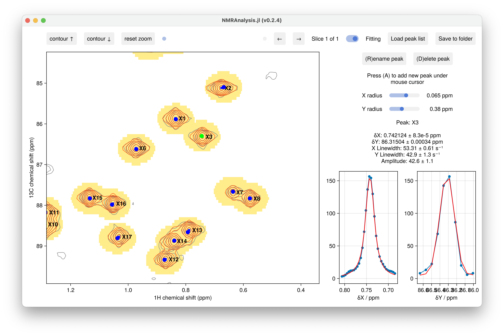
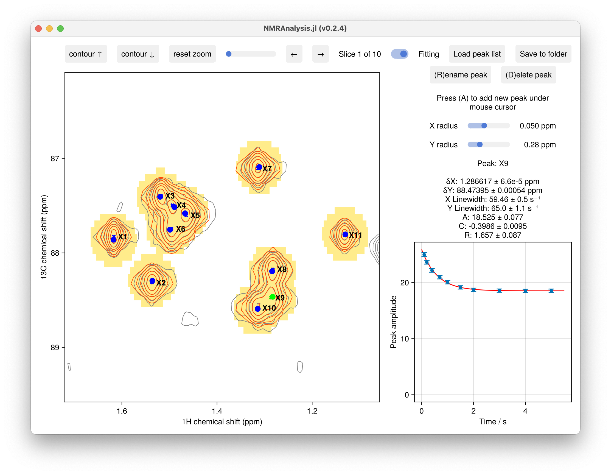

2D Fitting
Usage Example
using NMRAnalysis
# Analyze T2 relaxation data from multiple processed spectra
relaxation2d(
["expno/pdata/231", # First spectrum
"expno/pdata/232", # Second spectrum
"expno/pdata/233"], # Third spectrum
[0.01, 0.03, 0.05] # Relaxation delays in seconds
)
# Analyze hetNOE data from reference/saturated pair
hetnoe2d(
["reference/pdata/1",
"saturated/pdata/1"],
[false, true] # saturation status
)
# Single plane peak fitting
intensities2d("109/pdata/23")
t=[0.1, .2, .4, .7, 1, 1.5, 2,3,4,5]
recovery2d("33",t)
Interactive Analysis
The 2D analysis functions provide an interactive GUI for:
- Peak picking
- Fitting
- Visual validation
- Data export
Output
All analysis functions provide:
- Fitted parameters with uncertainties
- Publication-quality figures
- Options to save results